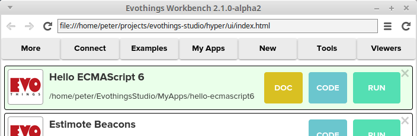
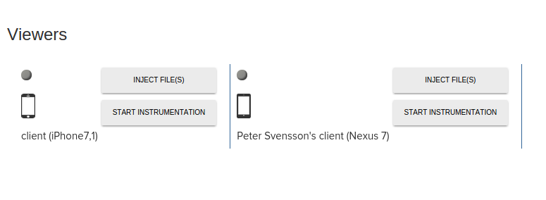
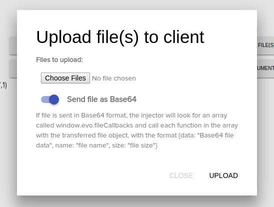
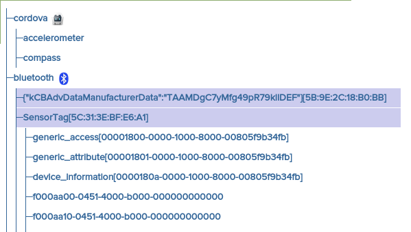
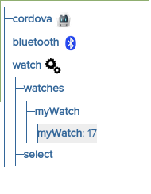
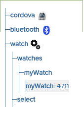
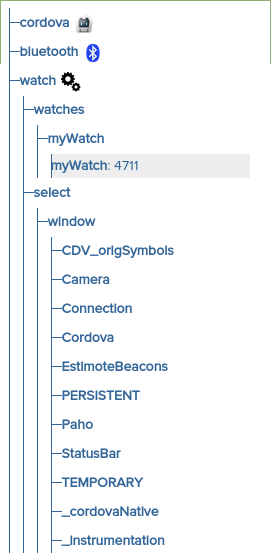
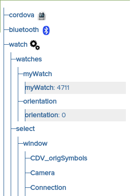
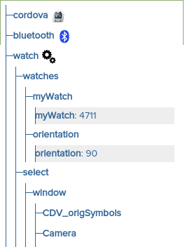
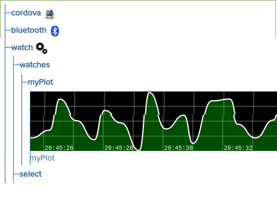

NOTE: The Instrumentation features are new in Evothings Studio 2.1.0, currently available as an early release for testers and enthusiasts - download Evothings Studio 2.1.0-alpha.
What we’re rolling out as part of this alpha release is two new features that we hope will make your debugging simpler and your development quicker; instrumentation and file injections.
To access both features, you now need to open a new tool window, by clicking on the ‘Viewers’ button at the far right in the toolbar of Evothings studio. You will also need at least version 1.3.0 of the Evothings Viewer App and a stable internet cnnection to fully utilize all new features!
The window will list all connected viewers and the make of the phone they’re running on. Feel free to click around exploring what you can do!
The tricky part of developing mobile apps is that your code by definition runs on another device than the one you’re sitting at. Logging, for one thing. Since the beginning we’ve had support for sending logs back to the studio, by using the hyper.log command.
What we’re rolling out as part of this alpha release is two new features that we hope will make your debugging simpler and your development quicker; instrumentation and file injections.
To access both features, you now need to open a new tool window, by clicking on the ‘Viewers’ button.

The window will list all connected viewers and the make of the phone they’re running on.
If you have several phones of the same make, you can identify which one you are working with by clicking on the phone icon, which will trigger a vibration on the device (if supported).
Let’s start by looking at injection of files. This feature have two different modes. Either files can be transferred as regular JavaScript files, and be evaluated/executed in the phone’s cordova webview environment directly after transfer, or the file (which in this case can be of any type) is encoded in base64, transferred and then a callback function will be called in the phone with the file data, if present.
For the second option, you can for example load an app that defines the array window.evo.fileCallbacks, and adds a function to the array, like this;
window.evo.fileCallbacks = []
Var cb = function(file)
{
hyper.log(‘Yohoo! Got file callback fired for file ‘+file.name)
}
window.evo.fileCallbacks.push(cb)
Then you can enter the Viewers tools window, open the ‘Inject File(s)’ menu and inject a file with Base64 encoding, which will trigger your callback function after the file has been uploaded.
We envision that this feature might be useful if you are using a web app on a phone to deliver OTA (over The Air) updates for devices over BLE, and if you already have a mechanism for getting updates to the devices from the phone.
You work with this feature by adding a folder somwhere under your project directiry named '_filesync'. You must then make sure that the project is run (loaded) on your mobile phone viewers. After that, any changed file under that _filesync directory will be send to the phone is the same manner as described above, so you can register listeners for file transfers for non-js files (or make sure that any javaScript files sent are able to call any custom registration functions of your themselves.
A special case is when you are developing a ES6 project, where you have a source and a build directory. Currently you must place the _filesync directory under the folder named 'app' in your project directory. We aim in the future to make this placement more flexible.
What happen is that a number of files that resides in the directory ‘hyper/injectables/’ was transferred to the phone and evaluated. When a phone has instrumentation loaded, the circle above its icon will change from grey to green, and the registered instrumentation modules will be shown.
Included in this release are three modules.
Cordova - A sample instrumentation module which can be used as a starter kit for your own, custom instrumentation. It shows how to build a small hierarchy that can be selected and subscribed to. Check the file ‘hyper/injectables/cordova-instrumentation.js’ in the Evothings studio installation directory for more details.
Cordova exposes two subscribable services; accelerometer and compass. Selecting either will send a stream of updates from the phone to the studio, which will be interpreted as a timeline graph.
All subscription of module services data streams sends any changes every 300 ms and will stop after 10 minutes, after which you will have to restart it. By clicking on the output of a subscription you immediately unsubscribe from it.
Bluetooth - This module is a simple Bluetooth scanner which let you see which BLE devices your phone can see. If a device have exposed service characteristics, these can be further drilled into.
Watches - Sometimes you need to watch for property changes in your app, but not as a graph. The watch does this for you, and essentially monitors a named property of an object and send any changes to the studio.
You can add watches to your app by having instrumentation loaded and then execute;
window.foo = 17
window.evo.watcher.watch('myWatch', window, 'foo', 'noplot')
Which will result in a new watch called ‘myWatch’ showing under the ‘watches’ module
If you change the value of window.foo to something else, this will immediately be reflected, for example if you execute in your app
window.foo = 4711
You will see
Another useful feature is the select branch of the watch module. If you click that, you can drill down into all properties under the cordova webview, and choose which you want to add as watch.
If you select window.orientation, you will get a new watch called ‘orientation’, showing the current value of that property.
If you now turn your phone sideways, the value will change to reflect the orientation of the phone.
If you would like to add your own watches, but as graphical plots, you can do that too. If instrumentation is loaded, you can execute;
window.xyzzy = 1
timer = setInterval(function() { window.xyzzy = Math.random()*10 }, 500)
window.evo.watcher.watch('myPlot', window, 'xyzzy', 'plot')
If you want to try it out, you can paste the above text into the Tools window editor and evaluate it on the client, which will add a new watch called ‘myPlot’ under your watches.
'This is the alpha-release of instrumentation, so we expect some bugs and possible API changes in the future. We do not recommend that you use instrumentation for production use at the moment.
However, we strongly encourage you to play with it as much as you can, tweak it, break it and make up new uses for it.
Please let us know what you are doing with it and what features you’d like to see next.
A great way to get questions answered is our gitter forum, which can be found here: https://gitter.im/evothings/evothings
Download Evothings Studio 2.1.0-alpha and get started within minutes. It is fun and easy!
Ask questions and discuss IoT app development on Gitter: gitter.im/evothings/evothings